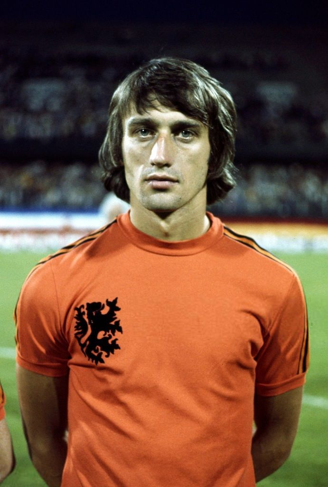

Franz Beckenbaeur - 1976
- Le doublé pour le défenseur central Allemand
Ce Ballon d'Or 1976 ira rejoindre, dans sa vitrine aux souvenirs, celui qu'il avait déjà reçu en 1972 quand, à la tête de l'équipe nationale de la RFA, il avait conquis le titre de champion d'Europe.
Nationalité : Allemande
Né le : 11 septembre 1945, à Munich (ALL)
Taille : 1,81
Poids : 75 kg
Poste : défenseur/milieu
Clubs : SC Munich 1906 (1954-1958), Bayern Munich (1958-1977), Cosmos New York (1977-1980), Hambourg SV (1980-1982) et Cosmos New York (mai-novembre 1983)
Palmarès de joueur : Coupe du monde 1974 ; Championnat d'Europe des nations 1972 ; Coupe intercontinentale des clubs 1976 ; Coupe des champions 1974, 1975 et 1976 ; Coupe des Coupes 1967 ; Championnat de RFA 1969, 1972, 1973, 1974 et 1982 ; Championnat des Etats-Unis 1977, 1978 et 1980 ; Coupe de RFA 1966, 1967, 1969 et 1971
Bilan en club : 103 sélections, 14 buts (1965-1977)
Bilan en équipe nationale : 63 sélections A, 10 buts (1954-1966)
Bilan en phase finale de Coupe du monde : 3 participations (1er en 1974 ; 2e en 1966 ; 3e en 1970), 18 matches, 3 buts (1966-1974)
Palmarès Ballon d'Or : vainqueur en 1972 et 1976 et (2e en 1974 et 1975 ; 3e en 1966).
Carrière d'entraîneur : Allemagne A (septembre 1984-juillet 1990), Marseille (septembre-décembre 1990), Bayern Munich (décembre 1993-novembre 1994 ; avril-juin 1996)
Palmarès d'entraîneur : Coupe du monde 1990 ; Coupe de l'UEFA 1996 ; Championnat d'Allemagne 1994
Classement du Ballon d’Or France Football 1976 :
Franz Beckenbaeur (RFA / Bayern Munich),
91 pts.

Rober Rensenbrink (Pays-Bas / Anderlecht),
75 pts.
Ivo Viktor (Tchécoslovaquie / Dukla Prague),
52 pts.
Retour à l'accueil
 Franz Beckenbaeur - 1976
Franz Beckenbaeur - 1976